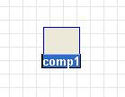
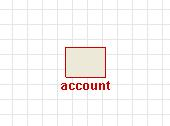
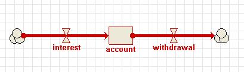
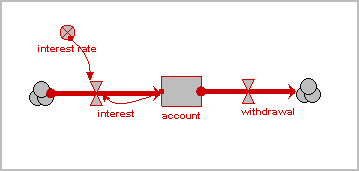
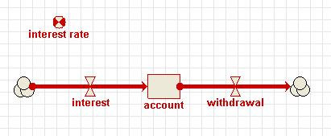
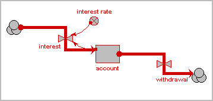
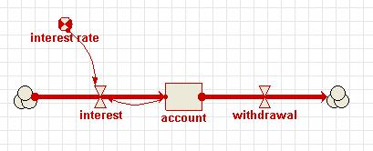
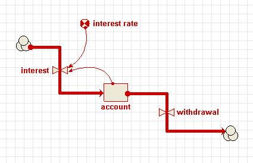

Step 2: Making the model diagram
We begin by drawing the model diagram for the bank account model. A note on colours used in the following description: when you add a component to the model diagram, it is initially drawn in blue. This means that the component is selected. You will see the ways in which this is useful later on. When the component is not selected, it will turn red. This is its usual colour, and means that the component needs some extra information (like a value or equation) before the model can be built.
1. Add a compartment to the model diagram.
·
Click on the  compartment symbol in the toolbar.
compartment symbol in the toolbar.
· Move the mouse to the middle of the desktop window, and click again.
You
should see a box labelled comp1.

2. Rename the compartment “account”.
· Type in the label account.

3. Add an interest flow and a withdrawal flow.
·
Click on the  flow symbol in the toolbar.
flow symbol in the toolbar.
· Move the mouse to the left of the compartment labelled account, hold the mouse button down, and drag the mouse into the centre of the compartment. Release the mouse button.
· Type in the label interest.
· Move the mouse into the centre of the compartment, and drag to the blank area to its right. Release the mouse button.
· Type in the label withdrawal.

4. Add a variable for the interest rate
·
Click on the 
· Move the mouse to the blank area above the interest flow, and click once.
· Type in the label interest rate.

7. Draw the influences
·
Click on the 
· Move the mouse to the middle of the compartment labelled account, and drag an influence arrow to the flow labelled interest.
· Release the mouse button when the flow has turned green.
· Move the mouse to the middle of the variable labelled interest rate, and again drag an influence arrow to the flow labelled interest.

8. Re-arrange the model diagram
·
Click on the  pointer button in the toolbar.
pointer button in the toolbar.
· Move the mouse to the middle of the compartment labelled account.
· Drag the mouse, and watch the compartment and its associated arrows re-arrange themselves.
· You can also move the following components:
· the cloud symbol at the end of each flow arrow;
· the variable;
· the valve symbols on the flows;
· the middle of an influence arrow;
· the connection points where arrows meet nodes (these can be dragged around the boundary of the node); and
· the labels. (A note on moving captions: if a component is selected, and is coloured blue, then the caption can be edited. To edit a caption, click on the label and type. You can drag the mouse to select a range of characters. To move the label relative to its component, make sure the component is not selected. You can then drag the label into its new position.)

This completes the drawing of the model diagram. In the next step, you will provide the numeric values and equations you need for simulating the behaviour of the bank account. Note, however, that this sequence (complete the model diagram before providing any quantitative information) is followed here for convenience: in general, you are free to provide the quantitative information at any stage in the diagramming process.